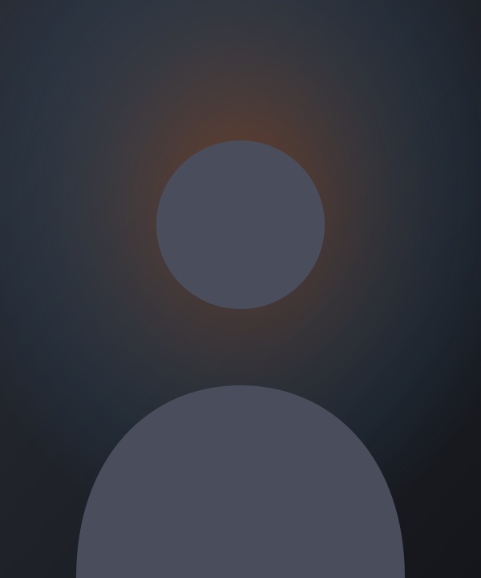

About me
I am a Civil Engineer who believes in working smart, learning continuously, and delivering quality results. I am a quick learner with a strong sense of responsibility and dedication toward my work. Although I am naturally reserved, I am always comfortable asking questions, seeking guidance, and communicating whenever it is necessary to achieve the best outcome.

From raw footage to a story people watch to the end.
My mission
To help creators and brands turn raw, unorganized footage into polished stories that grow their audience.
My journey
Five milestones from weekend hobby to full-time editor.
Started editing as a hobby
Helped a friend edit his YouTube uploads on weekends.
First paid client
The hobby became paid work for the first time.
Crossed 100 edited videos
Practice turned into speed, polish and a clear style.
Started managing full channels
Moved beyond editing to run content for whole channels.
Reached 300+ videos and 50+ clients
Editing became a full-time career built on repeat clients.
Core skills
Sample levels for now. I will let you adjust them later.